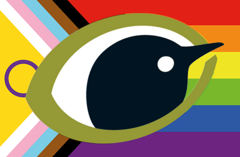
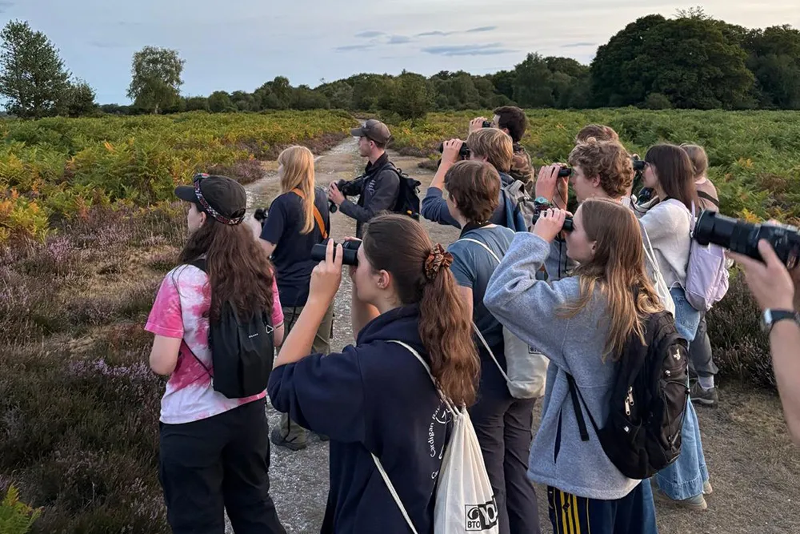

🔭
Volunteer
Join a survey, count your local birds, or lend your skills behind the scenes. Every record matters.
Volunteer with us →
British Trustfor OrnithologyNo matter your experience, your location or your spare time — your contribution helps protect the birds we love.
Join a survey, count your local birds, or lend your skills behind the scenes. Every record matters.
Volunteer with us →One-off or regular, your gift funds the monitoring that keeps watch over the UK's birds.
Donate now →Become a member and get closer to the science — magazines, events and a community of bird lovers.
Join the BTO →For young people 12–24 — camps, opportunities and a network of fellow young naturalists.
Bird Camps 2026 →Country offices and local groups across the UK connect you to events and expertise near you.
Find your region →Fundraise, leave a gift in your Will, or partner with us as a business to power our work.
Ways to give →
Your sightings feed directly into our research. Reporting a ringed bird helps us understand movements and survival across the whole of the UK and beyond.
Report a bird →Independent monitoring depends on people like you. Give today and help secure a future for birds and nature.
Donate to an appeal →